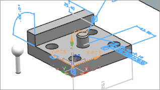

Complete and save the final alignment
In this activity, you will define an alignment command to complete the PCS alignment.
-
On the Insert toolbar, click Alignment
 .
.
-
In the Alignment dialog box, from the Type list, choose Translate PCS Origin.
-
In the XP group, from the Method list, select Measured Feature.
-
From the Select Feature list, choose TEACH_POINT.
-
In the PCS Name box, type PCS_4HOLE_FINAL.
-
In the Operation Name box, type TRANS_XORG, and click OK.
The last degree of freedom is now constrained and the alignment is complete.

-
On the Insert toolbar, click Alignment
.
-
In the Alignment dialog box, from the Type list, choose Save PCS.
-
In the Save Parameters group, from the PCS Name list, select PCS_4HOLE_FINAL.
-
In the Device Identifier list, type PCS_4HOLE_FINAL.
-
In the Operation Name box, type SAVE_FINAL_PCS and click OK.
The aligned PCS is now saved and can be recalled if you need to modify it later in your program.
-
Right-click CMM_PROGRAM, choose Generate, and in the Generate Tool Path dialog box, click Accept Paths.
POS_XLINE and CONST_XLINE do not generate correctly.

PART_ALIGNMENT

 DEFINE_MCS
DEFINE_MCS
 TEACH_POINT
TEACH_POINT
 OPER_MSG_TP
MODE_MANUAL
OPER_MSG_TP
MODE_MANUAL
 TEACH_POINT_PATH
MODE_PROGMAN
OPER_MSG_BEGIN_INSP
TEACH_POINT_PATH
MODE_PROGMAN
OPER_MSG_BEGIN_INSP
 TOP_PLANE_A
TOP_PLANE_A
 TRANS_XYZ_TEACH_PT
PATH_TOP_PLANE_A
TRANS_XYZ_TEACH_PT
PATH_TOP_PLANE_A
 ROT_ALIGN_AX
ROT_ALIGN_AY
INSP_ALIGN_TZ
FRONT_FACE
PATH_FRONT_FACE
ROT_ALIGN_AX
ROT_ALIGN_AY
INSP_ALIGN_TZ
FRONT_FACE
PATH_FRONT_FACE

POS_XLINE
 CONST_XLINE
TRANS_Y_ORIG
ROT_ALIGN_XDIR
LF_SIDE_PLANE
PATH_LF_SIDE_PLANE
CONST_XLINE
TRANS_Y_ORIG
ROT_ALIGN_XDIR
LF_SIDE_PLANE
PATH_LF_SIDE_PLANE
POS_XLINE is the nominal design feature you constructed using CONST_XLINE. Because you moved these elements from the FEATURES and CONSTRUCTED_FEATURES groups to the PART_ALIGNMENT group, the construction became broken.
-
Double-click CONST_XLINE, click OK, and generate again.
The program now generates correctly.
-
Right-click CMM_PROGRAM, choose Post Process, and with the DMIS 5.2 postprocessor selected, click OK.
If a message reports that a file of the same name exists, click OK.
-
Save your inspection setup file.
In the Information window, review the DMIS output. For information on the commands you created for part alignment, see the Dimensional Measuring Interface Standard, Part 1, Revision 5.2, ANSI/DMIS 105.2-2009.
|
Note |
If you run simulations on this program you will notice machine limit violations, collisions, and incorrect angles. You can further experiment with correcting these by referring to the CMM Inspection Programming Online Help. |